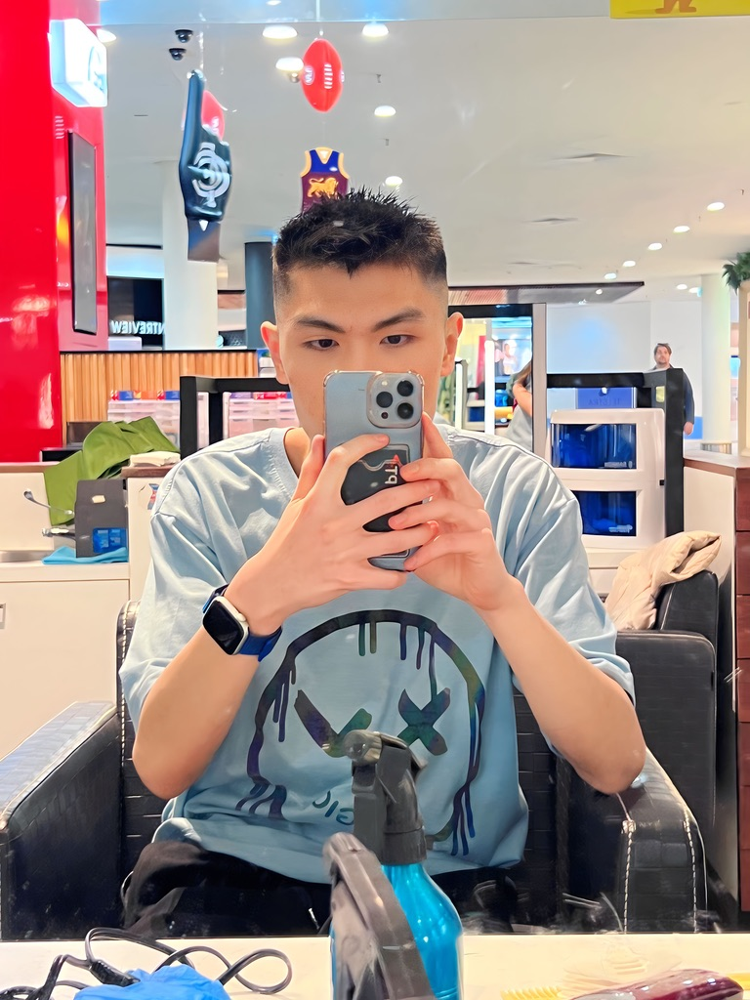

Melbourne VIC

As an international student who has been in Australia since 2022,
I hold a student visa. I applied for this visa and academic position at La Trobe University
and realise my passion for Mathematics and the development of related computer applicatons.
My current fields of study are Software Development and Cloud Computing, and I am also doing some applications of Artificial Intelligent
including Deep Learning, Machine Learning and Computer Vision. I am interested in contributing to research and projects in these fields.
I finished my bachelor degree in Software Engineering at La Trobe University in November 2025,
and I plan to do the research degree in 2026. In addition, I am holding the La Trobe Provost's Commendation 2024 certification
which recognizes academic excellence, awarded to students with a Weighted Average Mark (WAM) of at least 85% in 2024.
Today is 03/04/2025. Here are some of my goals that I want to achieve before I turn 27, a milestone in life. I want to be a successful person and have many achievements in my life. Here are some of the things I aspire to accomplish: